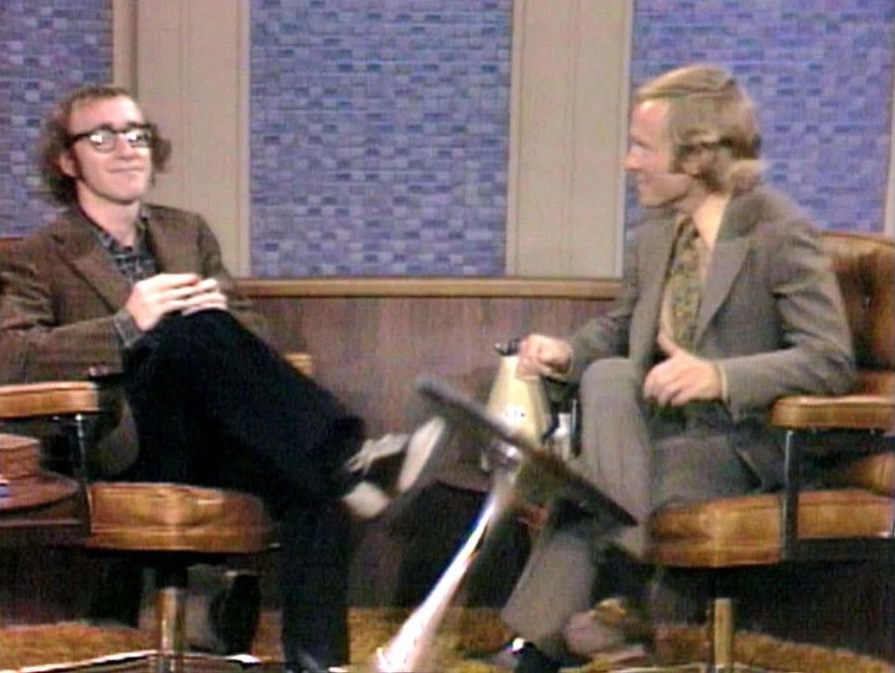
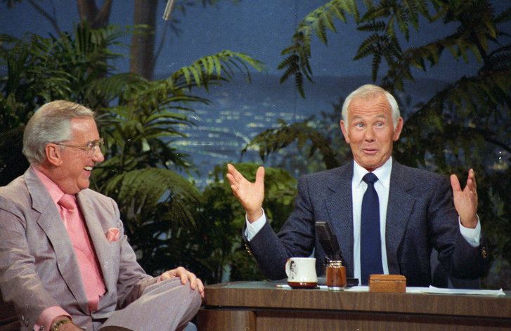
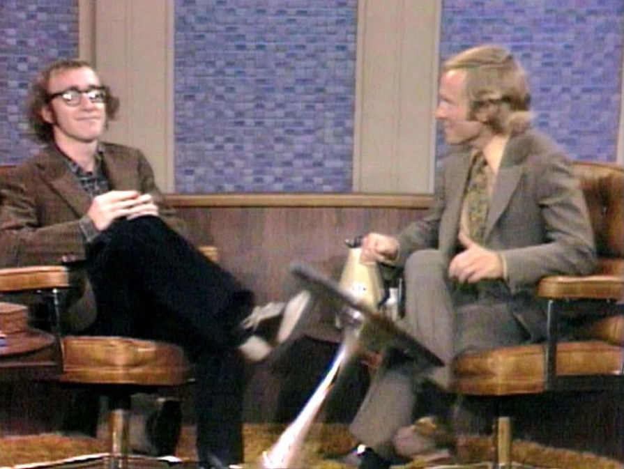
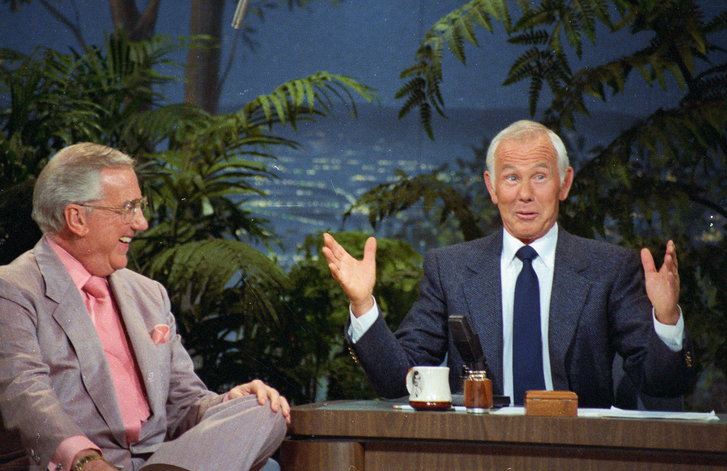
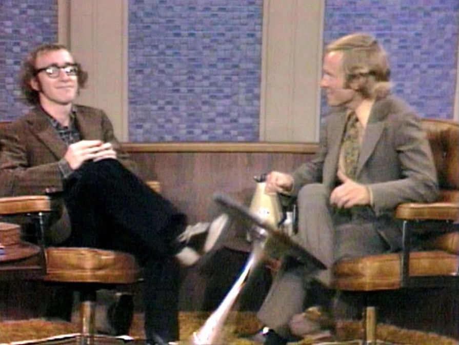
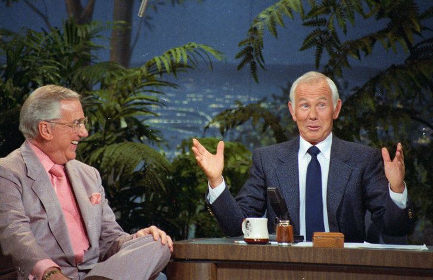

back
There was once only three channels on the TV.
Everyone would watch the same thing and because
of which the bar for what could be on TV was high.
Again there is only one channel on
NewLiveManhattanChannel.com

 
